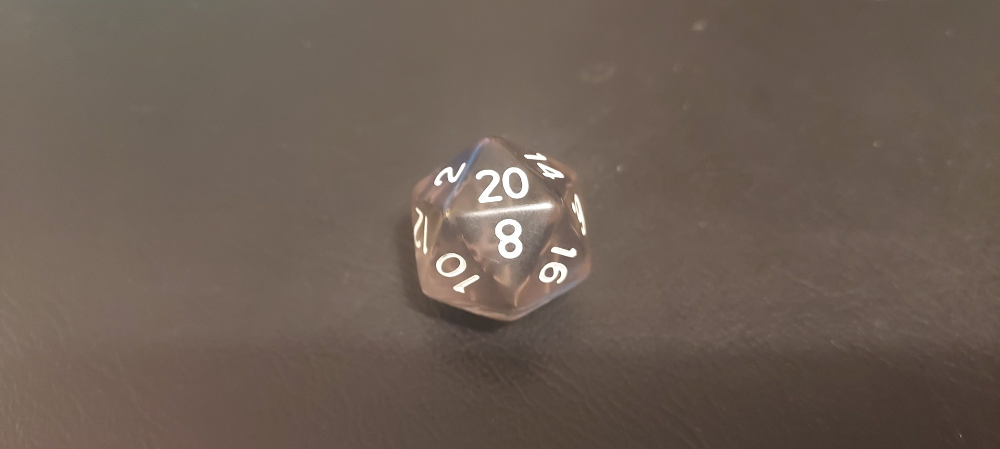
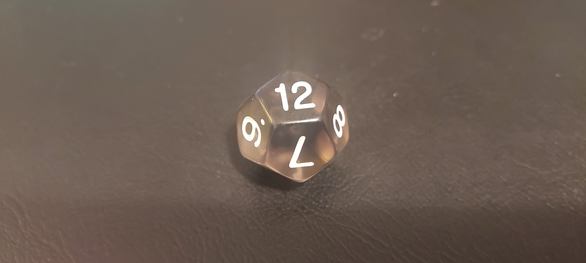
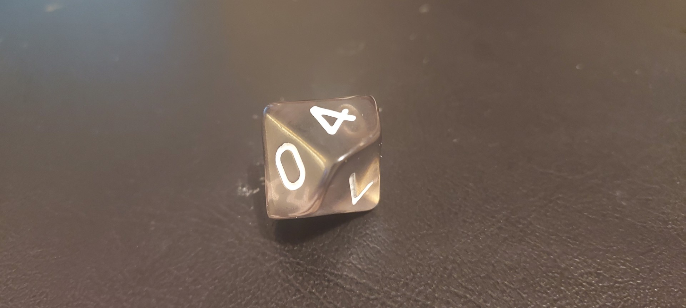
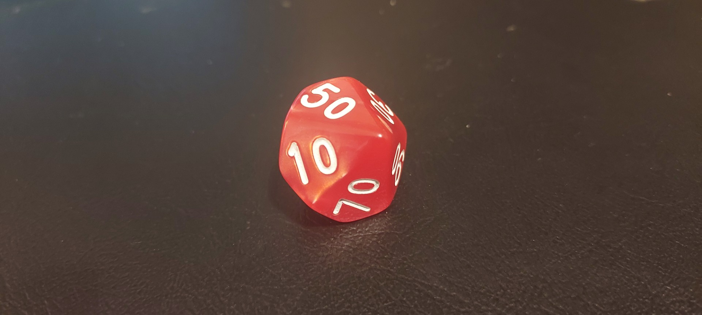
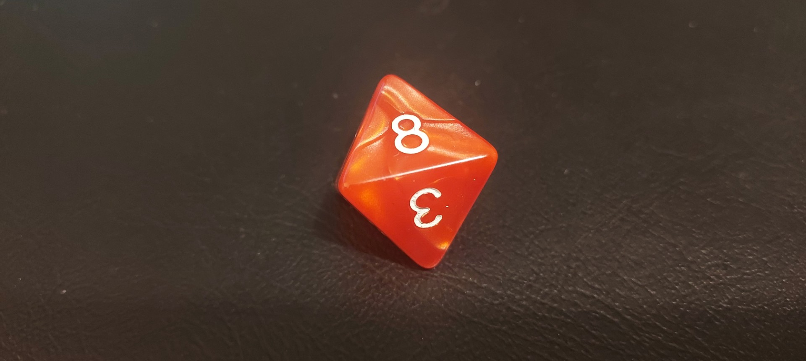
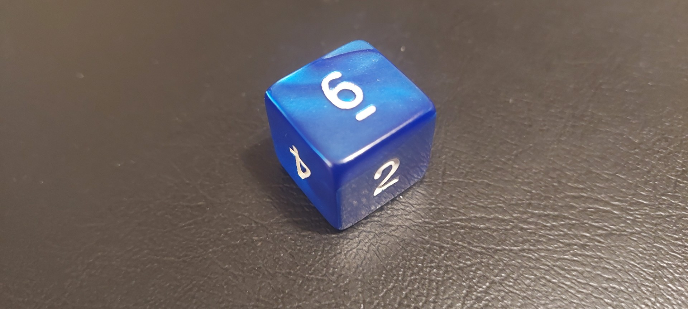
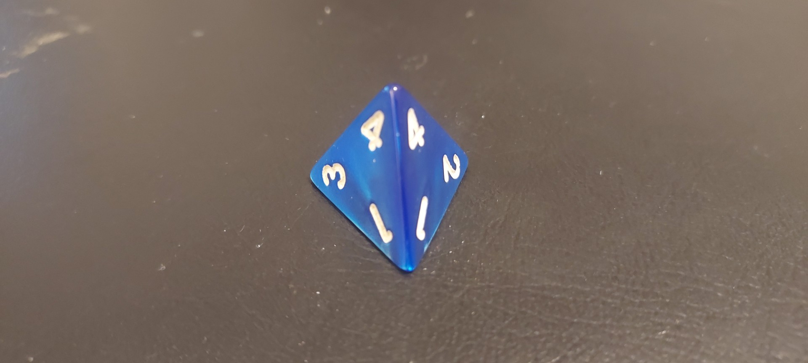

What are D&D dice?
There is many diffrent types of dice, most of the dice are situational, and used to determan outcomes of actions. This page will show most of the dice and what they are used for
A lot of the information used from this is used from Know your Dice By: Joab

- 
This is a Dice 20: D20
The D20 is the most important part of the dice collection almost every single role that is made will use a D20. A few examples are:
- Attack roles
- Skill checks
- Ability checks
There is also a Fancy name to these dice and this one is called: Icosahedron
- 
This is a Dice 12: D12
This dice will most likey be your lease roled out of the bunch but it still servers as an important role for 2 main things:
- Damage rolls for heavy weapons
- Random generator for hours, months and or other measurements
Fancy name for the D12: Dodecahedron
- 
This is a Dice 10: D10
This is first version of the D10 the other is on the next slide. The D10 get its use from a few specific areas:
- used for specific classes as a "hit die"
- some weapons (such as a two handed weapon to swing it)
- and some spells
Fancy name for the D10: Pentagonal Trapezohedron
- 
This is a Dice 10 percentile: D10%
Sometimes the DM may say to a player to role a percentile dice. This could mean to result in random encounters or for clerics some of the ways to use this are:
- using the D10% to get the first digit 1-9 then role the d10 to get the other number
- roling 0s on both dice is a result of 100%
Fancy name for the D10: Zocchihedron
- 
This is a Dice 8: D8
The D8 is used for many diffrent things like weapons, hit dice, and class features. it like 2 conjoined pyramids and it is more than likely the second most common dice you will use. some of its uses are:
- most classes
- many weapons
- and BattleMaster Maneuvers
Fancy name for the D8: Octahedron
- 
Thsi is a Dice 6: D6
When people say that this game is more of a "dice" game they think this one but there is more than just thie one. D6 are used for:
- Wizards hit Dice
- many more spells
- many more weapons
- and rolling ability scores in Character creation
Fancy name for the D6: Cube
- 
This is a Dice 4: D4
The D4 is one of the more odd ones out of the bunch of Dice. It is recomended that the user shakes the dice very very well because of its odd shape. This dice is used for:
- Smaller weapons
- and some spells
Fancy name for the D4: Tetrahedron